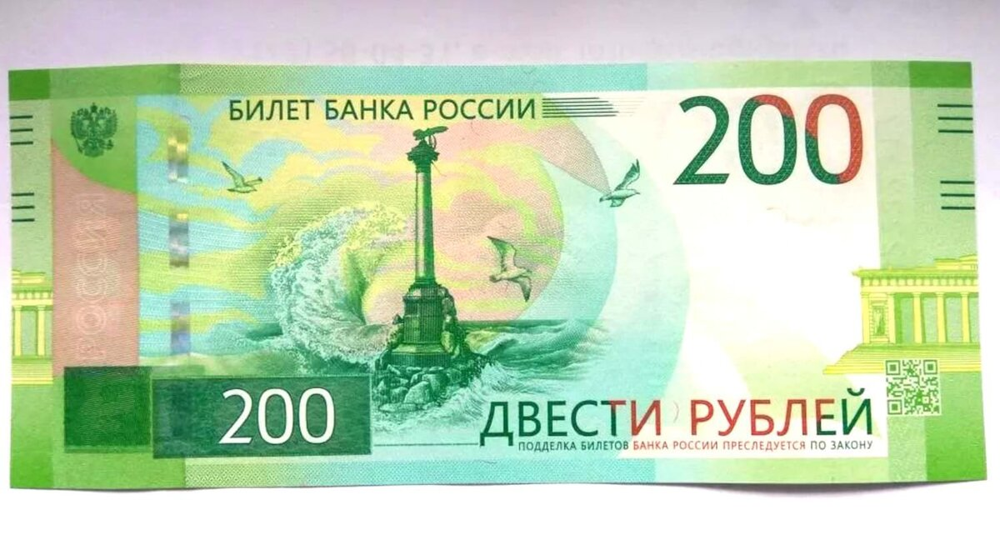
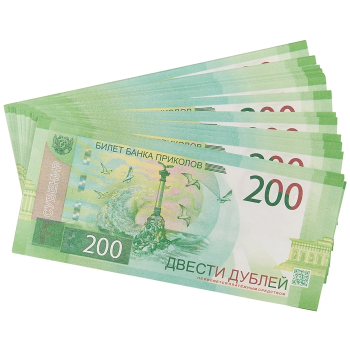

Сегодня в городе Раменское школьник 9го класса сделал сайт "топ 5 купюр". За несколько секунд этот сайт стал самым популярный сайтом в мире, но из за злого преподователя курсов по созданию сайтов по имени саша ему пришлось удалить сайт
вот один из примеров купюр которые были в том топе
так выглядит купюра в 200 рублей
если картинка была взломана американцами переходите по ссылкеВОУВОУВОУ текст
ничего себе вторая страницаучитель обозвал своего ученика Назара безнадежным
Преобладающий цвет банкноты — зеленый.
Основное изображение лицевой стороны банкноты — Памятник затопленным кораблям в г. Севастополе
Основное изображение оборотной стороны банкноты — Государственный историко-архитектурный музей-заповедник «Херсонес Таврический».
На лицевой стороне банкноты слева вверху расположен герб Российской Федерации.
На оборотной стороне в верхней правой части банкноты находится надпись «2017» — год образца банкноты.
В нижней правой части лицевой стороны банкноты расположен QR-код, содержащий ссылку на страницу сайта Банка России с описанием защитных признаков банкноты.
Банкнота изготовлена на хлопковой бумаге белого цвета повышенной плотности с полимерной пропиткой.
В бумагу внедрены защитные волокна двух типов — цветные с чередующимися участками красного и синего цветов и волокна серого цвета.
Четыре фрагмента ныряющей голографической защитной нити шириной 3 мм выходят на поверхность лицевой стороны банкноты.
Банкнота имеет два серийных номера, расположенных на оборотной стороне банкноты и имеющих двухбуквенное обозначение серии и девять цифр номера. Левый номер имеет читаемость по короткой стороне банкноты, правый — по длинной стороне.
Преобладающий цвет банкноты — синий.
Основное изображение лицевой стороны банкноты — Русский мост — вантовый мост в г. Владивостоке, соединяющий остров Русский с материковой частью г. Владивостока.
Основное изображение оборотной стороны банкноты — космодром «Восточный».
На лицевой стороне банкноты слева вверху расположен герб Российской Федерации.
На оборотной стороне в верхней правой части банкноты находится надпись «2017» — год образца банкноты.
В нижней правой части лицевой стороны банкноты расположен QR-код, содержащий ссылку на страницу сайта Банка России с описанием защитных признаков банкноты.
Банкнота изготовлена на хлопковой бумаге белого цвета.
В бумагу внедрены защитные волокна двух типов — цветные с чередующимися участками красного и синего цветов и волокна серого цвета.
Ныряющая голографическая защитная нить шириной 5 мм выходит на поверхность лицевой стороны банкноты в окнах фигурной формы.
Банкнота имеет два серийных номера, расположенных на оборотной стороне банкноты и имеющих двухбуквенное обозначение серии и девять цифр номера. Левый номер имеет читаемость по короткой стороне банкноты, правый — по длинной стороне.
Банкнота изготовлена на высококачественной хлопковой бумаге светло-розового оттенка. В бумагу внедрены волокна светло-зеленого, красного и фиолетового цветов, а также защитная нить, расположенная вертикально и видимая на просвет. Бумага имеет локальные водяные знаки, размещенные слева и справа на купонных полях.
Основное изображение лицевой стороны — квадрига на портике здания Большого театра.
Основное изображение оборотной стороны — здание Большого театра в Москве.
Преобладающий цвет банкноты — коричнево-зеленый. Банкнота обладает несколькими машиночитаемыми защитными признаками.
Банкнота имеет два серийных номера, расположенных на лицевой стороне банкноты и состоящих из двухбуквенного обозначения серии и семи цифр.
Банкнота изготовлена на белой высококачественной хлопковой бумаге. В бумагу внедрены волокна светло-зеленого и красного цвета, волокна с чередующимися участками красного и желтого цветов, а также вертикально расположенная защитная нить с повторяющимся текстом, видимая на просвет. Бумага имеет локальные водяные знаки, размещенные слева и справа на купонных полях.
Основные изображения лицевой стороны — памятник Ярославу Мудрому, часовня на фоне кремля г.Ярославля.
Основные изображения оборотной стороны — колокольня и церковь Иоанна Предтечи в г.Ярославле.
Преобладающий цвет банкноты — сине-зеленый. Эмблема Банка России выполнена оптически переменной краской (OVI). Банкнота обладает несколькими машиночитаемыми защитными признаками.
Банкнота имеет два серийных номера, расположенных на лицевой стороне банкноты и состоящих из двухбуквенного обозначения серии и семи цифр.